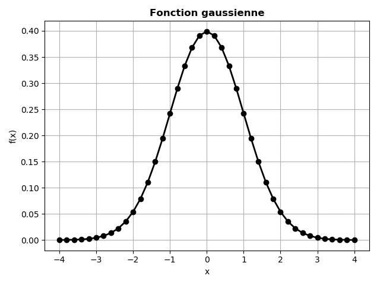
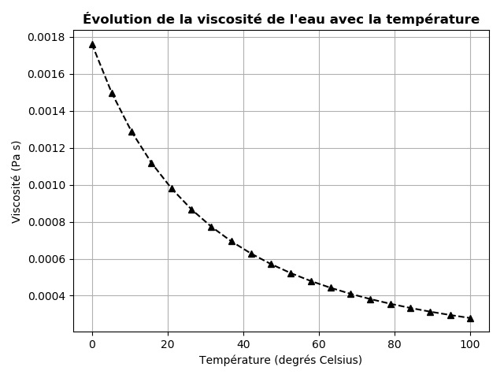

Le \( n^{ième} \) niveau d'énergie d'un électron dans un atome d'hydrogène est donné par: $$ \begin{equation} E_n = -\frac{m_e e^4}{8\epsilon_0^2h^2}\cdot\frac{1}{n^2} , \label{_auto1} \end{equation} $$ où \( m_e = 9.1094⋅10^{-31} \ kg \) est la masse de l'électron, \( e = 1.602210^{−19} \ C \) est la charge élémentaire, \( \epsilon_0 = 8.8542 \cdot 10^{-12} C^2 s^2 \ kg^{-1}m^{-3} \) est la permittivité électrique du vide, et \( h=6.6261 \cdot 10^{−34} \ Js \)
a)
Définir la fonction E(n) qui retourne la valeur du niveau d’énergie en électron-volt (\( eV \)).
On défini d'abord les constantes dans l'équation, ensuite la fonction E(n) qui retourne la valeur du niveau d’énergie en électron-volt (\( eV \)):
# Constantes
me = 9.1094e-31
e = 1.6022e-19
eps0 = 8.8542e-12
h = 6.6261e-34
def E(n):
Ejoule = - (me * e**4)/(8*eps0**2 * h**2)* (1/n**2)
return Ejoule/e
b)
E(n=1). A quoi correspond ce niveau d'énergie?Le niveau d'énergie pour n = 1:
print("E(n = 1) = ", E(n = 1), " eV")
# ==> E(n = 1) = -13.606152702370753 eV
Le niveau d'énergie le plus bas \( E_1 = - 13,6 \ eV \) obtenu pour n = 1, correspond au niveau fondamental de l'atome d'hydrogène. C'est l'état le plus stable.
Le niveau d'énergie pour n = 100:
print("E(n = 100) = ", E(n = 100), " eV")
# ==> E(n = 100) = -0.0013606152702370755 eV
Le niveau d'énergie est nul \( E = 0 \ eV \) lorsque n tend vers l'infini (l'électron est alors séparé du noyau).
c) Écrire une boucle qui calcule et affiche le niveau d'énergie \( E_n \) pour \( n = 1,…, 20 \).
Le résultat doit être comme suivant:
E1 = -13.606152702370753 eV
E2 = -3.4015381755926883 eV
............................
............................
E19 = -0.03769017369077771 eV
E20 = -0.03401538175592689 eV
On peut calculer et afficher les valeurs \( E_n \) pour \( n = 1,…, 20 \) en utilisant une boucle for:
for n in range(1, 21):
print("E{} = {} eV".format(n, E(n)))
d)
L'énergie libérée lorsqu'un électron se déplace du niveau ni au niveau nf est donnée par:
$$
\begin{equation}
\Delta E = -\frac{m_e e^4}{8\epsilon_0^2h^2}\cdot\left( \frac{1}{n_i^2}-\frac{1}{n_f^2}\right)
\label{_auto2}
\end{equation}
$$
Construire et afficher les valeurs de la matrice \( \Delta E^{i,f} \) dont la cellule de la colonne i et de la ligne f contient l’énergie libérée lorsqu’un électron passe du niveau d’énergie i au niveau f, pour \( i, f = 1, …, 5 \).
$$
\begin{equation}
\Delta E^{i,f} = \begin{pmatrix}
\Delta E_{1,1} & \Delta E_{1,2} & \Delta E_{1,3} & \Delta E_{1,4} & \Delta E_{1,5} \\\
\Delta E_{2,1} & \Delta E_{2,2} & \Delta E_{2,3} & \Delta E_{2,4} & \Delta E_{2,5} \\\
\Delta E_{3,1} & \Delta E_{3,2} & \Delta E_{3,3} & \Delta E_{3,4} & \Delta E_{3,5} \\\
\Delta E_{4,1} & \Delta E_{4,2} & \Delta E_{4,3} & \Delta E_{4,4} & \Delta E_{4,5} \\\
\Delta E_{5,1} & \Delta E_{5,2} & \Delta E_{5,3} & \Delta E_{5,4} & \Delta E_{5,5}
\end{pmatrix}
\label{_auto3}
\end{equation}
$$
On peut créer la matrice \( \Delta E^{i,f} \) et afficher ces valeurs avec la méthode suivante:
from numpy import array
DEn = [[E(ni) - E(nf) for ni in range(1, 6)] for nf in range(1,6)]
print(array(DEn))
#==> DEn =
#[[ 0. 10.20461453 12.09435796 12.75576816 13.06190659]
# [-10.20461453 0. 1.88974343 2.55115363 2.85729207]
# [-12.09435796 -1.88974343 0. 0.6614102 0.96754864]
# [-12.75576816 -2.55115363 -0.6614102 0. 0.30613844]
# [-13.06190659 -2.85729207 -0.96754864 -0.30613844 0. ]]
Nous voulons générer \( n + 1 \) coordonnées \( x \) équidistantes dans \( [a, b] \). Stocker, pour a = -2; b = 3 et n= 20 les coordonnées \( x \) dans une liste xList.
a)
Définir toutes les variables puis utiliser une boucle for et ajouter chaque coordonnée à la liste xList (initialement vide).
Avec \( n \) intervalles, correspondant à \( n + 1 \) points, dans \( [a, b] \), chaque intervalle a une longueur \( h = (b-a) / n \). Les coordonnées peuvent alors être générées par la formule xi = a + i * h; \( i = 0,…, n \).
La liste xList sera remplis par les valeurs de xi comme suivant:
n =20
a, b = -2, 3
h = (b - a) / n
xList = []
for i in range(n+1):
xi = a + i * h
xList.append(xi)
b) Utiliser une liste de compréhension comme une implémentation alternative.
Nous pouvons également remplir xList par une liste de compréhension:
xList = [a + i * h for i in range(n+1)]
c)
Vectoriser la liste résultante xList en un tableau numpy xVect. N'oubliez pas d'importer d'abord la fonction qui transforme les listes en tableaux à partir de numpy.
La fonction numpy.array() transforme les listes en tableaux numpy:
from numpy import array
xVect = array(xList)
a)
Définir une fonction f(x) qui met en œuvre la gaussienne suivante
$$
\begin{equation}
f(x) = {1\over\sqrt{2\pi}}e^{-\frac{1}{2}x^2}
\label{_auto4}
\end{equation}
$$
La fonction f(x) s'écrit:
import numpy as np
def f(x):
return 1/np.sqrt(2*np.pi) * np.exp(-0.5 *x*x)
b)
Remplir les listes xList et fList avec \( x \) et \( f(x) \) valeurs pour 41 coordonnées \( x \) uniformément espacées dans \( [−4,4] \).
Adapter l'exemple de l'exercice Exercise 2: Générer des coordonnées équidistantes (4 points).
n = 40
a, b = -4, 4
h = (b - a) / n
xList, fList=[], []
for i in range(n+1):
xi = a + i * h
fi = f(xi)
xList.append(xi)
fList.append(fi)
print(fList)
c)
Vectoriser le code en b) en créant les valeurs x à l'aide de la fonction linspace() à partir de la bibliothèque numpy et en évaluant f(x) pour un argument du tableau.
Soit un tableau x généré par la fonction numpy.linspace():
x = np.linspace(-4, 4, 41)
print(f(x))
d)
Faites un tracé de cette fonction f(x) en utilisant la bibliothèque matplotlib.
La sortie du programme devrait ressembler à la figure ci-dessous.

Le graphique sera généré en implémentant le code suivant:
import matplotlib.pyplot as plt
plt.plot(x, f(x), 'ko-',lw=2)
plt.title("Fonction gaussienne", fontweight='bold')
plt.xlabel("x")
plt.ylabel("f(x)")
plt.grid()
plt.tight_layout()
plt.savefig("gauss.png"); plt.savefig("gauss.pdf")
La viscosité de l'eau, \( \mu \), varie avec la température \( T \) (en Kelvin) selon la formule: $$ \begin{equation} \mu (T) = A\cdot 10^{B/(T-C)} \label{_auto5} \end{equation} $$ où \( A=2.414\cdot 10^{-5}\hbox{ Pa s} \), \( B=247.8 \ K \) et \( C = 140 \ K \).
a)
Définir la fonction mu(T, A, B, C) qui renvoie la valeur de la viscosité \( \mu \) pour chaque valeur donnée de la température \( T \).
La fonction mu(T, A, B, C) est définie comme suivant:
def mu(T, A, B, C):
return A*10**(B/(T-C))
b) Tracer \( \mu (T) \) pour 20 valeurs de \( T \) entre 0 et 100 degrés Celsius. Marquer l'axe des \( x \) avec "Température (degrés Celsius)", l'axe des \( y \) avec "viscosité (Pa s)" et le titre "Évolution de la viscosité de l'eau avec la température". Notez que \( T \) dans la formule de \( \mu \) doit être en Kelvin.

Le code qui trace la viscosité de l'eau en fonction de la température est comme suivant:
import matplotlib.pyplot as plt
import numpy as np
# 0 deg C = 273 deg K
T = np.linspace(0, 100, 20)
plt.plot(T, mu(T+273, A = 2.414e-5, B = 247.8, C = 140), 'k^--')
plt.title("Évolution de la viscosité de l'eau avec la température",
fontweight='bold')
plt.xlabel("Température (degrés Celsius)")
plt.ylabel("Viscosité (Pa s)")
plt.grid()
plt.savefig("viscosity.png"); plt.savefig("viscosity.pdf")